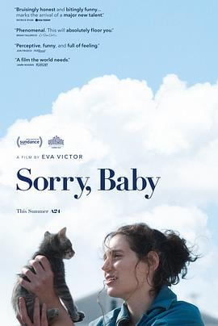

7.4
对不起，宝贝
Sorry, Baby
2025
美国
评分 7.4
导演:
伊娃·维克托
演员:
伊娃·维克托 / 娜奥米·阿基 / 路易斯·坎瑟米 / 凯莉·麦科马克 / 卢卡斯·赫奇斯 / 约翰·卡洛·林奇 / 海缇安·朴
类型:
剧情
剧情简介
艾丽丝（伊娃·维克托 饰）是一名文学教授，生活在新英格兰一座林边小镇。朋友莉朵（娜奥米·阿基 饰）从纽约来访，带来了怀孕的消息。看似稳定的重逢背后，是艾丽丝多年未被愈合的伤口。研究生时期的一次导师晚间邀请，成为她隐忍与逃避的起点：夜色中，她从那座光鲜学府走出，脚步却像踩在冰面上，窒息的记忆藏在沉默里。五个章节打破时间顺序，镜头在回忆与现实间穿梭：课堂里的文集讨论、出租车后座的沉默、陪审团会议的询问、邻居关切的叹息声。艾丽丝的每一个微笑都在压抑，那只她收养的流浪猫，是她在无声夜晚里唯一能握的温度。莉朵稳定前进、开创家庭，而艾丽丝却仍在原地守望，她不愿终日被那个“坏事”定义，更想朝前迈步。导演用冷静而锐利的镜头，将伤痕与日常并列：通勤的雨滴、办公室的空椅、书架上一本翻旧的《到灯塔去》，都像她回避却无法释怀的痕迹。影片虽以剧情为轴，却更多是对“如何在失控之后重返生活”的细腻探问。你会看到她在夜晚爆发恐慌，又在白日坚持讲课；听到她轻声对婴儿说：“欢迎来到这个世界，它有光，也有暗。” “对不起，宝贝”不是一句告白，而是她对自己、对过去、对可能的未来的温柔和解。